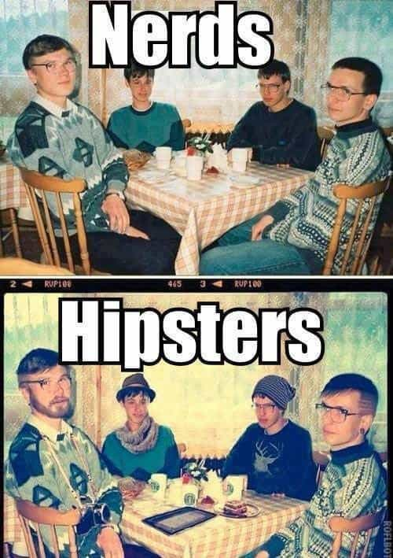

< < < Back
How To Increase Your Sexual Prospects Before Even Using Game – Return Of Kings
Crash ‘n Burn
The other morning I went through my typical routine of getting ready for my workout. I stretch out, down a bottle of water and a cup of black coffee and hit the road for my 5 minute trek to my complex’s weight room. The weight room attendant is the typical try-hard blue pill beta. His clean shaven face, shoulder length hair pulled back in a greasy wannabe pony tail to show his “bad-assness”, and his ever present protein shake makes me chuckle every time I see him.
The first thing I noticed about this dude when I first met him was his horrific breath. Morning breath is one thing but this guy’s chronic halitosis was of the worst variety and was a tell tale sign his chompers hadn’t been intimate with a toothbrush in quite sometime. With Limp Bizkit blaring over the sound system (his choice), I put in my ear buds to attempt to drown out the residual “fuck you’s” spewing from the speakers and start warming up for my squats when a solid 8 whom I’d never seen there before walks in to sign her name. Billy Bad Ass immediately springs into action and starts running terrible game. I didn’t hear the interaction but it was obvious she wasn’t interested. After a pathetic attempt to have a conversation with her (he tried to corner her while she was on the elliptical machine), she finally packed up and left. I doubt she’ll be back.
A little while later another guy walks in gives the attendant some sort of cheesy secret handshake and starts a conversation. They’re friends. On my way out I overhear one of them ask “Why are bitches so fucking rude?” Clearly they’d been discussing Don Juan’s crash-and-burn with the hottie earlier. I’ve seen this more times than I’d like to admit and that last one was the last straw for me.
The Ugly Truth
Men neglect the basics in terms of what it takes to resemble and act like a man—the very prerequisite of attracting the opposite sex. And these men wonder aloud about “what’s wrong with women” or “why are girls so hard to approach” or “why are they so complicated” on a daily basis. Men here know that the answers to these questions are vast and that solving the poonani paradigm takes time and work. But if a man doesn’t master the basics, he will never come close to finding the resolutions he needs.
First off, let me be crystal clear: game is necessary to consistently bed high value (read: hot) women without getting taken to the cleaners in some way, shape, or form. Granted, there are plenty of men with zero game who enjoy the company of beautiful girls. Rich men have harems, high-status men have romp rosters, and good looking men have good looking girls at their beck and call. But the trick is to fuck them on the regular without allowing them to take their pound of flesh before, during, or after the sex fest is over. That’s game.
There are, however, a few ways for men new to game to get a head start with the ladies whilst honing their skills in the Venusian Arts. I’m not going to promise you that making these simple, yet effective changes will instantly cause women to throw their panties at you, but you will certainly start to notice a few more glimpses from the fairer sex. Now most of these changes will seem blatantly obvious at first glance. The reason for this is that they’ve been drilled into our heads since we were yay high.
Granted, the majority of us exercise one or two of these routines every so often but precious few men use all of them persistently and this is where we fall short. The fact is, these changes can easily be made within 24 hours, but it’s important to understand that most of these modifications are habits. For these strategies to work, they need to be executed faithfully and maintained regularly—a small price to pay to increase your potential pussy pool.
Dress Better All The Time
The older I get the more I notice that a lot of men don’t put enough time into their wardrobe on a consistent basis. It frustrates me to no end when I see dudes at 7-Eleven looking like vagabonds because they threw on anything they could get their hands on for the short trip to grab a pack of cigarettes. What these guys don’t realize is that their bad choice in threads, even for a short time, is costing them opportunities.
Your choice in dress conveys a lot about who you are as a person. It gives people a pretty good idea about how to treat and address you, and more importantly, what your value might be. Hobos are generally treated with pity because they’re dressed pitifully. Men in suits are treated better because their wardrobe choice commands more respect. Simple concept. The importance of what you choose to wear is magnified tenfold when dealing with women because they instantly assign value to most everyone they see based solely on their clothing. Much like men assign value to women based mainly on their physical beauty.
Everyone’s style is different but there are a few universal rules when it comes to attire. On that note, I would highly recommend checking out Virgile Kent’s blog for an in depth perspective on all things related to the male wardrobe. This dude knows his shit as far as style is concerned so I visit his site at least once a week for tidbits on tightening up my vestment game. And for those of you who might think he’s like the typical homosexual-esque “fashionista” on Lifetime, Oxygen, or any number of gurrrl power channels, I can assure you he’s far from that. VK is the foremost expert on picking the right threads to make you look like a man and will point you in the right direction in every aspect of dress from head to toe.
VK will also advise you to make sure you’re looking good all the time and I concur 100%. Nobody’s suggesting you put on a three piece suit for a quick trip around the corner for a bottle of water. But a wrinkled t-shirt and dirty jeans will most assuredly repel that ample assed yoga pants stretching brunette ahead of you in the checkout line. Taking a little extra time to wear clothing that accentuates your masculinity and confidence might just coax her to turn around and ask you if you’ve ever tried the organic spinach she’s buying as an excuse to strike up conversation.
Mind Your Personal Hygiene
Personal hygiene is paramount when it comes to women. It is often the difference between getting an opportunity to spit game at her and getting dismissed altogether. The three most important aspects of your daily hygiene regimen are oral care, the hair on your head and face, and the way you smell.
Breath
You can have everything going for you but if you approach a woman and your breath smells like hot garbage, you’re out. Period. Nobody should have to tell you to brush, floss twice a day, and tongue scrape at this point in your life but, again, this is something I find a lot of people, men and women alike, neglecting. Minty fresh breath is your goal so start paying attention to oral care and you’ll notice you’re more confident with women—especially in close quarters (like the checkout line) where it counts.
Hair
Changing your hair style these days is as easy as walking into a salon or barber shop. Look online, or through magazines to find a style that you’re comfortable with and fits your facial profile and change it up. Anything but the boring shit you’ve been sporting on your dome for the last 5+ years. Hell, maybe even take a razor and go with the bald look. Whatever your choice make sure it’s masculine and appealing to the eye. Trust me when I tell you that the women you see on a daily basis will definitely notice and respond.
Facial hair is extremely crucial and probably the most important change you can make to entice the opposite sex. The reason for this is that it represents raw masculinity to the core. Women overwhelmingly respond much more favorably to a man with facial hair than a man who is clean shaven because they want to be ravaged by a man who exudes a ruggedness. I could go on about the many studies that prove this (Google it) but I’m basing this purely on anecdotal experience and field reports from fellow red pillers. So grow a beard, a gotee, an anchor—anything to avoid having a baby face like the typical office beta. Do not forget to maintain your look. It takes work but nothing looks worse than an unkempt gotee. The bottom line here is that facial hair quite literally makes the man.
Scent
Few men understand the importance of the way they smell in regards to attracting the opposite sex. The bulk of us either pay no attention to it, or worse, bathe ourselves in cologne. The solution to this is simple. Find a body spray or cologne with a clean, light scent that doesn’t overpower and give yourself a few sprtiz’s on the neck, arms, and chest before heading out. If a woman thinks you smell good, she will tell you.
Paying close attention to your hygiene on a daily basis will swing the odds in your favor when it comes to attracting women. I’m not suggesting you become a pretty boy who checks himself out in mirrors all the time. But brushing your teeth when they feel “furry” after a day or two or breaking out the razor when your beard starts looking sloppy isn’t gonna cut it either. Making damn sure your hygiene game is rock solid all the time is the key. Girls are much more likely to converse with a man who has carefully manicured facial hair, fresh breath, and a clean, masculine scent emanating from his person than an average baby faced schlub with greasy cookie cutter hair, bad breath, and no discernible scent because he’s too lazy to implement good habits.
Be genuinely unique
A lot of people tend to do the same things to stand out or be different (hipsters and “emo” people come to mind) so avoiding what everybody else does to attract attention will automatically set yourself apart from a lot of those people. Unapologetically doing the things you like to do will separate you from most. Finding unique ways to express yourself during everyday tasks without the appearance of trying too hard is what will capture the imagination of women.

For example, I’m a smoker. So are a lot of other people. To stand out from the typical cancer stick inhaling crowd, I roll my own cigarettes with black cigarette papers. I also invested in a carbon fiber butane lighter and bought a cool cigarette case with a black matte finish with my initials engraved on it. When girls see me light my black cigarette with a blue flame coming from a slick looking lighter it piques their interest.
Somehow they always manage to find themselves near me asking what kind of cigarettes they are, telling me they’re cool looking, or asking for one which gives me an excuse to flash my cigarette case (they sometimes ask me what the initials stand for—I make ‘em guess and never tell them). This gives me the crack in the door I need to run game as striking up conversation at that point is child’s play. I’ve gotten more than my fair share of lays from conversations started in the smoking area and all I did was spend a little coin on a few things to help separate myself from the herd.
Girls are drawn to a man who marches to the beat of a different drummer, not some chuckleheaded drone who goes with the flow. It’s important not to come off as a “peacock” as some PUA sites would advise you to do. Women see right through this ruse and will flat out ignore you and have a good laugh about it with their friends later. By the same token don’t be afraid to push the boundaries either. Put your balls on the line and see what happens.
Taking some time to explore your interests and devising different ways to carry out monotonous daily activities in an uncommon manner is a sure fire way to get the female hamster wheel spinning in overdrive wondering just what the hell it is about you that has her panties moistening.
Get a forearm tattoo
While tattoos on chicks are generally trashy and a pretty good sign she’s a slut, they have a great effect on the way a woman perceives a man in a sexual context. Tattoos are edgy and masculine because they convey excitement and rebellion—chick crack. More 9s and 10s are banging guys rocking skin art than ones that aren’t. And the ones that aren’t definitely want to. I’m not suggesting you run out get sleeves just yet but a well placed tattoo instantaneously puts you into another class of male as far as sexual hierarchy goes.
Getting a forearm tattoo allows you to show your new found edginess without much effort. Just wear a short sleeved shirt or a collared shirt with the sleeves rolled up and you’ll immediately project that “I don’t give a fuck” attitude that girls eat up. Being able to easily cover it up when necessary is what makes the forearm the best place for your new tat as you can conveniently go from rebel to businessman in a few short seconds.
Whatever you choose to ink into your skin, stay away from mainstream tattoos like tribal armbands that every meat head out there has. Be original but remember, this tattoo is for you so make sure it means and projects something significant to you. Female attention is merely a side effect of this decision so the air of subtle rebellion is the key here. Stoking the flames of her curiosity enough to ask you about it is what you’re going for and as soon as she does, Game on.
Take away
As stated before, a couple of these are pretty obvious and putting them into practice will up your SMV in the blink of an eye. Yes, you’ll have to learn game to supplement it but you have to crawl before you can walk and making these changes will help ease you into getting used to getting attention from attractive females on a regular basis. Nobody goes from beta to Cassanova in a day but this will help you take a gigantic first step in the right direction.
Read Next: The Largest Factor That Determines A Man’s Self-Perceived Value


{kind=link}
{kind=link}
{kind=link}
{kind=link}